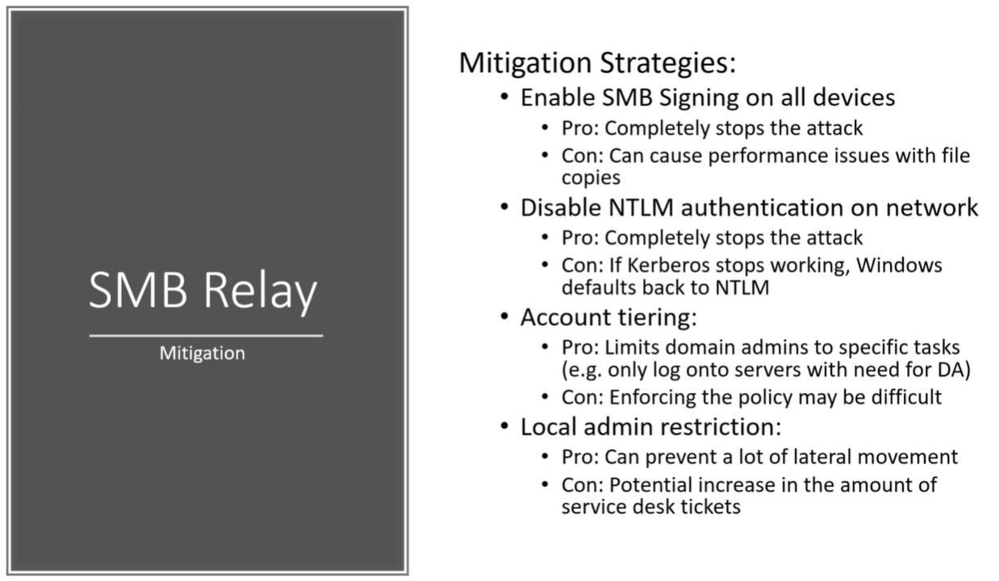

It's reported that it's about a 15 percent or so decrease in speed on file transfers when you're running with SMB
So that SMB signing does cause a little bit longer time period but Longer time period for computer security is worth the trade off
However if curb growth stops working as the authentication method then Windows is going to default back to NTLM anyway.
So it's not a fail safe completly
Big think to talk about :
- SMB signing should be diabled
- Local admin shoud be restricted
and other are just best practice sort of things but still don't completely eliminate the attack.